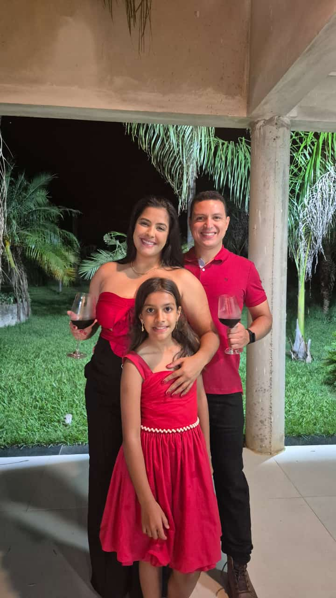
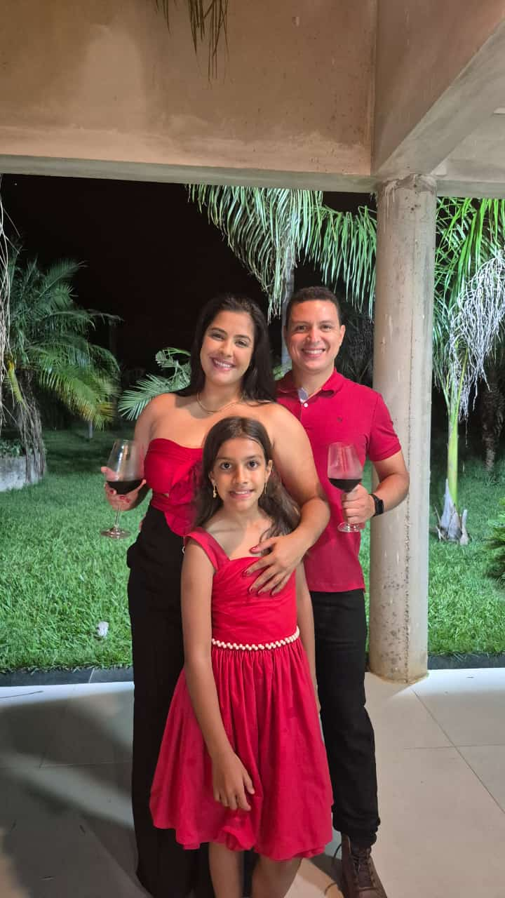

10 de setembro de 2016
Alguns momentos mudam nossa vida para sempre, e diante de um altar prometemos ser um do outro.
Uma jornada de amor, marcada por momentos inesquecíveis ao seu lado.
Estamos juntos há...
Estamos prestes a completar 9 voltas ao redor do Sol.
Tudo começou em um casamento....
Durante um casamento, no dia 10 de setembro de 2016, Deus quis que duas pessoas, que quase haviam se encontrado antes, fossem apresentadas uma à outra diante de um altar. E então, um buquê mudou o rumo de suas vidas, lágrimas foram derramadas e, naquele instante, nascia a nossa história.

Capítulo 1: Nosso Primeiro Beijo
Quantos casais podem dizer que tiveram seu primeiro beijo registrado em foto como nós? Quantos começam sua história dessa maneira?
Capítulo 2: Nossa primeira viagem
Nos primeiros meses, partimos juntos em nossas viagens, como sempre gostamos, transformando cada momento em lembranças eternas.


Capítulo 3: Nossa primeira viagem internacional
Todo o esforço para tirar os RGs e os passaportes valeu a pena. Tivemos nossa primeira viagem internacional, nosso primeiro voo juntos, cheios de ansiedade e emoção. Foi um dos momentos mais marcantes para nós.


Capítulo 4: Parceiros de aventura
Que sorte ter uma companheira que se entrega a qualquer aventura. Nossa paixão por natureza e descobertas torna cada momento marcante.


Capítulo 5: A vida é uma festa
Incontáveis momentos de alegria e risadas, sempre acompanhados de uma cerveja gelada.


Capítulo 6: Primeira viagem em familia
Nossa primeira viagem com a Sophia: o desespero dela no avião, a batalha com a comida, os cafés da manhã fartos, e ela sentadinha no SnowLand, balançando as perninhas. Tudo mágico!


Capítulo 7: O noivado
O que dizer desse dia, dessa viagem, e da ansiedade de chegar logo para te entregar a aliança que confirmaria todo o meu amor? Sem dúvida, foi um dos melhores dias da minha vida, o dia em que você se tornou minha noiva.


 

Capítulo 8: A razão, nossa familia
Quando olho tudo o que construímos juntos com a Sophia, tenho certeza de que Deus abençoou nossa família, "É pequena e está meio quebrada, mas ainda é boa. É, ainda é boa."


Capítulo 9: Aqueles momentos de casal
Para mim, uma das coisas que melhor nos define são nossos momentos de casal em casa. Durante a pandemia, eles foram poucos, sem contar os momentos mais picantes que também compartilhamos.


Capítulo 10: Deus
Sinto que, a cada dia, estamos mais próximos de Deus. Ele é nosso pilar desde o primeiro dia diante do altar, nossas alianças foram abençoadas na casa da Mãe, e confiantes Nele, devemos seguir.


Capítulo 11: Vocês
O que dizer de vocês duas? Vocês me mostraram o amor verdadeiro, algo que nunca havia sentido antes. Um amor puro, sincero e até inocente. Aquela menina que conhece ainda bebê, e ao poucos foi me ganhando com seu jeito especial, aprendi a amar ela como minha filha. Eu amo vocês do fundo do coração.


Capítulo 12: Daniele Rezende
Como eu amo suas fotos espontâneas e aleatórias. Nesses momentos, você revela a sua essência e o seu jeito único que sempre me encantou, são fotos como essas que amo, sempre alegram meus dias.


Capítulo 13: Dani...
O que dizer sobre você? Uma mistura de tudo, um furacão de emoção, uma humildade que encanta, um coração que ama sem medida e que conquista todos ao seu redor. Mesmo nos momentos de cansaço ou estresse, você segue firme, uma mulher guerreira e uma mãe exemplar, enfrentando o mundo de peito aberto. Meu orgulho e amor por você são imensos, e cada dia ao seu lado é um presente que me faz acreditar ainda mais no verdadeiro significado da vida e do amor.


Capítulo 13: ...Linda
Uma mulher de sorriso encantador, cuja alegria ilumina tudo ao seu redor. Quando está feliz, rindo como nessa foto no SnowLand que tanto amo, seu brilho contagia o mundo e transforma cada momento em magia. Sua beleza está nos detalhes de sua presença marcante, no seu sorriso de boca grande, nos olhos grandes, nas suas pintinhas no rosto lindo, até mesmo na forma como dorme. Uma mulher com rosto de menina que me deixa doido, Uma mulher de corpo, alma e coração grande, simplesmente LINDA.
Better Together
Eu acredito em memórias, elas parecem tão bonitas quando eu durmo
E agora quando, quando eu acordo, você parece tão bonita dormindo perto de mim
Mas não há tempo o suficiente
E não há nenhuma música que eu poderia cantar
E não há uma combinação de palavras que eu poderia dizer
Mas eu ainda vou te falar uma coisa
Somos melhores juntos
O futuro...
Sei que existem momentos turbulentos, mas confio em Deus que superaremos cada um deles juntos.
Ainda temos muitos capítulos para escrever em nossa história, muitas alegrias para viver como família e inúmeras memórias para criar ao lado da nossa Sophia.
E quem sabe, se for da vontade de Deus, Ele ainda nos abençoará com mais um anjo em nossas vidas.
Maria Luiza?! Daniel?!
... juntos!
Nossa história não termina aqui...
Cada página escrita até hoje é é um capitulo escrito com amor de uma vida inteira de memórias, aventuras, fé e amor.
Nossa caminhada ainda nos levará ao altar, recebendo as bênçãos de Deus.
O melhor ainda está por vir!
Eu te amo muito ❤
Continua.....